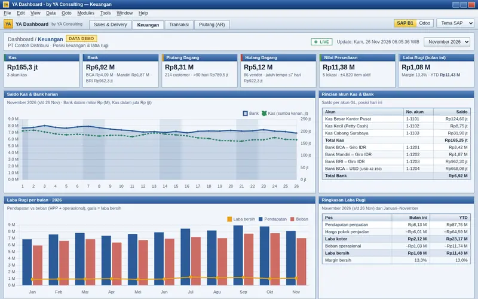
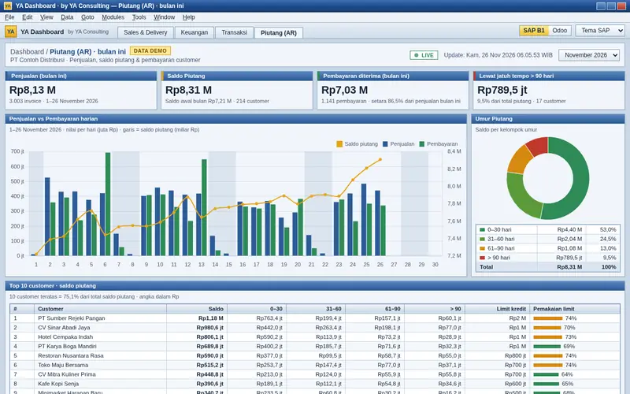
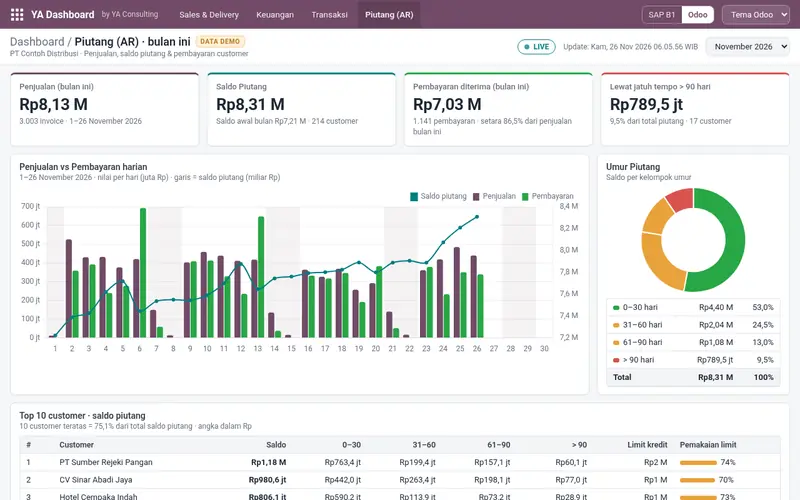
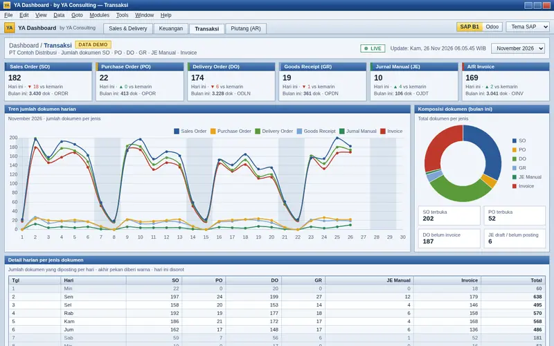
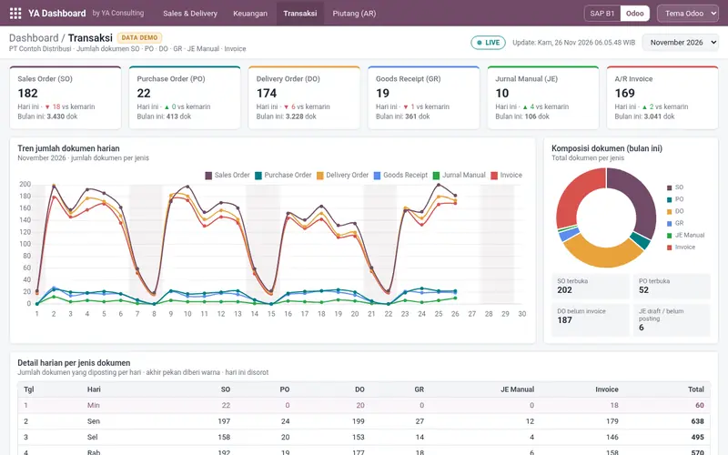
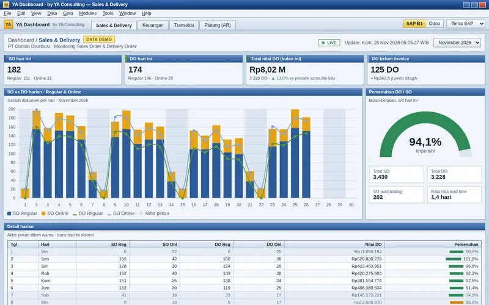
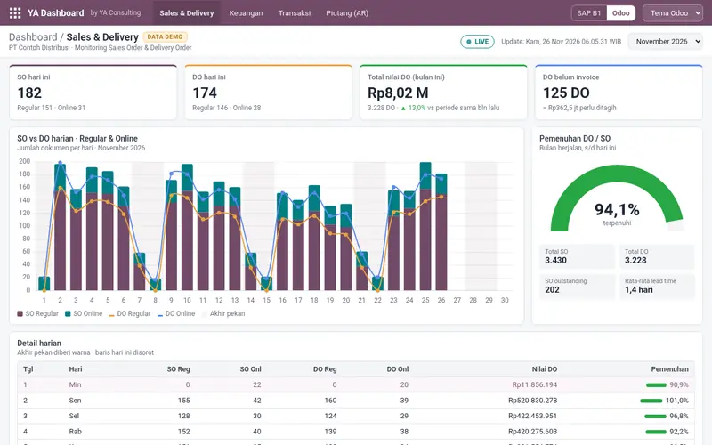
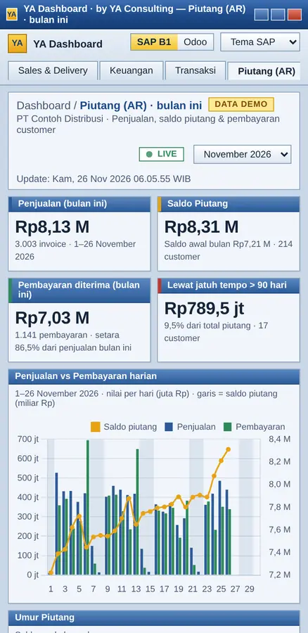

Jasa & Layanan
YA Dashboard SAP/Odoo
Dashboard keuangan, penjualan, dan piutang yang membaca data dari SAP Business One atau Odoo — tampilan rapi untuk owner dan finance.
Mulai Rp5.000.000 · harga final sesuai ruang lingkup
Ringkasan
Dashboard keuangan, penjualan, dan piutang yang membaca data dari SAP Business One atau Odoo — tampilan rapi untuk owner dan finance. Semua angka di halaman ini adalah harga mulai; saya kunci harga final di penawaran tertulis setelah scope jelas.
Fitur yang Anda dapat
- Menarik data langsung dari SAP B1 atau Odoo (bukan salinan Excel yang basi)
- Ringkasan keuangan: kas/bank, piutang, hutang, persediaan, dan laba rugi
- Monitor penjualan vs pembayaran, plus aging piutang
- Monitor volume transaksi: SO, PO, delivery, goods receipt, jurnal, invoice
- Sales & delivery: order terbuka, pengiriman, dan yang belum ter-invoice
- Dua tema tampilan (nuansa SAP atau Odoo), plus mode yang nyaman di layar gelap
- Tampil di desktop dan HP, dengan filter periode
- Hak akses: owner melihat ringkasan, finance melihat rincian yang relevan
- Bisa ditambah KPI atau halaman khusus pada paket Custom
Contoh layar
Klik gambar untuk memperbesar. Layar memakai data demo atau ilustrasi berlabel data dummy — bukan data klien.


Dashboard Keuangan, tema SAP — kas, bank, laba rugi (PT Contoh Distribusi, data demo). Dashboard Keuangan, tema Odoo (data demo).
Dashboard Keuangan, tema Odoo (data demo).


Dashboard Piutang (AR), tema SAP — aging dan top customer (data demo).

Dashboard Piutang (AR), tema Odoo (data demo).

Dashboard Transaksi, tema SAP — SO, PO, delivery, invoice (data demo).

Dashboard Transaksi, tema Odoo (data demo).

Dashboard Sales & Delivery, tema SAP (data demo).

Dashboard Sales & Delivery, tema Odoo (data demo).

Tampilan HP: ringkasan piutang tema SAP (data demo).Paket & harga
Starter
mulai Rp5.000.0001 dashboard, sumber data SAP B1 atau Odoo.
Pro
sekitar Rp18.000.0003–5 dashboard (misalnya keuangan, transaksi, dan piutang).
Custom
sesuai penawaranKPI, sumber data, atau tampilan di luar paket di atas.
Harga mulai / perkiraan. Final setelah saya lihat sumber datanya (SAP atau Odoo), jumlah perusahaan, dan KPI yang Anda butuhkan. Semua layar di halaman ini memakai data demo PT Contoh Distribusi.
Skema kerja
Pertanyaan singkat
Apakah harga di halaman ini sudah final?
Belum. Angka di situs adalah harga mulai. Harga final saya kirim lewat penawaran tertulis setelah ruang lingkup (scope) disepakati.
Bagaimana cara mulai?
Cukup DM saya di Threads untuk konsultasi gratis. Setelah kebutuhan jelas, saya buatkan ringkasan scope dan penawaran tertulis.
Apa yang termasuk support 3 bulan?
Perbaikan bug dari pekerjaan yang sudah diserahkan, pertanyaan pemakaian, dan penyesuaian kecil. Perubahan lingkup baru dihitung terpisah.
Apakah ada biaya langganan bulanan?
Untuk pengerjaan jasa, tidak ada biaya langganan. Support ringan 3 bulan sudah termasuk. Maintenance tahunan bersifat opsional, sekitar 15–20% per tahun. Untuk aplikasi custom, biaya hosting dihitung terpisah jika Anda ingin saya yang kelola.
Apakah datanya real-time?
Dashboard membaca data dari SAP atau Odoo secara berkala. Interval refresh kita sesuaikan (beberapa menit sampai beberapa jam) agar tidak membebani server Anda.
Bisa untuk SAP dan Odoo sekaligus?
Bisa dibicarakan di paket Custom, misalnya bila sebagian perusahaan di SAP dan sebagian di Odoo. Paket Starter dan Pro biasanya satu sumber dulu.
Mau bahas kebutuhan Anda?
Konsultasi gratis. Cukup DM saya di Threads. Saya balas dengan pertanyaan ringkas, lalu penawaran tertulis bila lingkupnya sudah jelas.
DM @yohanesandy.erp